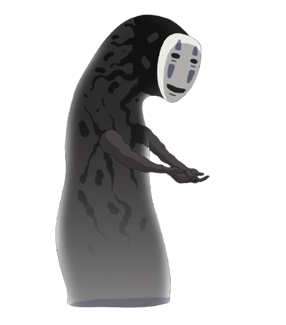

Hayao Miyazaki is a Japanese film director, producer, screenwriter,
animator, author, and manga artist. A co-founder of Studio Ghibli, he
has attained international acclaim as a masterful storyteller and
creator of animated feature films, and is widely regarded as one of the
most accomplished filmmakers in the history of animation.

Hayao Miyazaki was born in Bunkyō ward of Tokyo on January 5, 1941.
Miyazaki expressed interest in manga and animation from an early age and
started his career in 1963 as an animator at the Toei Douga studio, and
was subsequently involved in many early classics of Japanese animation.
From the beginning, he commanded attention with his incredible drawing
ability and the seemingly endless stream of movie ideas he proposed. In
1985 Miyazaki along with Isao Takahata, co-founded Studio Ghibli, a film
and animation studio wich would later on become world-renowned for their
animated films. Studio Ghibli is responsible for six out of the fifteen
highest grossing anime films in Japan, with Spirited Away standing as
number one.

Miyazaki has been described as combining elements of Walt Disney, Steven
Spielberg and Orson Welles. "In order to grow your audience, you must
betray their expectations"